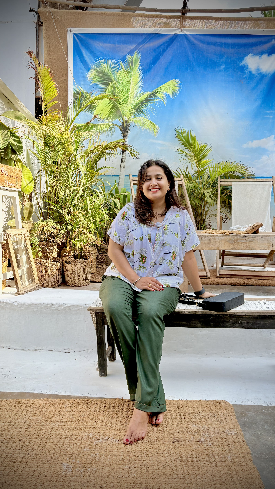

Meet the Artist 🌸
From UI wireframes to nail canvases - this is my story.

I've always been someone who couldn't quite colour inside the lines - not because I didn't know how, but because the lines never felt like enough.
I started with a Bachelor's in Computer Engineering, because that's what made sense on paper. But art kept calling. So I followed it - all the way into a Master's in Fashion Design, where I finally gave myself permission to think in textures, colours, and aesthetics.
For few years after that, I worked as a UI/UX Designer in the corporate world. I was still doing art, just on screens. And while I loved crafting beautiful digital experiences, I kept yearning for something more tangible - something I could create with my hands and someone could carry with them, proudly.
That's when it clicked. Nails.
Tiny canvases. Wearable art. The perfect intersection of beauty, design, and self-expression.
After formal training in nail artistry and specializing in gel systems, I launched gelXscape Studio in January 2026 - right here in Pune. Every set I create carries the same design thinking I've spent years honing: attention to proportion, a love for clean aesthetics, and the belief that even the smallest details deserve to be beautiful.
When you sit across from me at the studio, you're not just getting your nails done. You're getting a piece of art - designed specifically for you, by someone who chose this path with her whole heart.
Welcome to gelXscape. I'm so glad you're here. ✨